This post has been a long time coming. I published the viz in May, and promised a blog diving into how it works at the end of July. Since then, I have been taking a break over the summer to spend time with my family. We welcomed our first child into the world in mid-July, and it has been a real blessing to be able to spend the summer focussing on how to operate as a family of three. The past 10 weeks have been truly special.
The viz in question is Pick Your Lions. It looks at the squad from the 2025 British and Irish Lions tour of Australia and allows you to select your favourite players to make up a test team. The viz includes key metrics about each player from the 2024/25 season up to the time of selection. There are also thumbnail images of each player which were created using ChatGPT and the help of my rugby vizzing buddy, Rob Taylor.
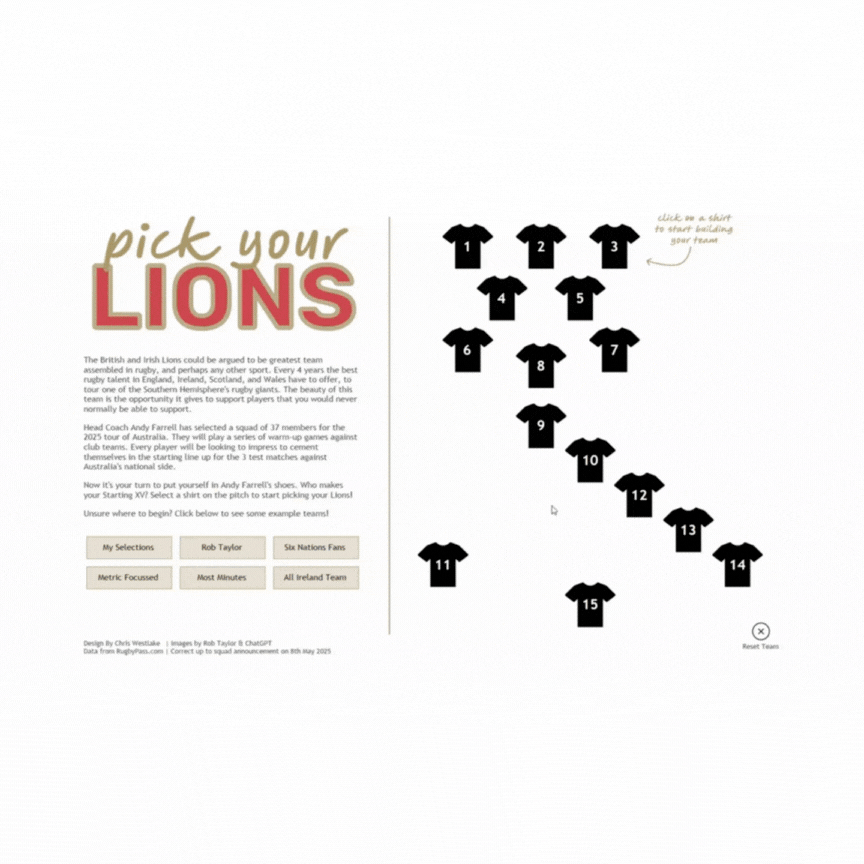
The technical build included a lot of Tableau features stacked on top of each other. Map Layers, Dynamic Zone Visability, and plenty of Dashboard Actions. I always enjoy building something that focuses around data that I am interested in, while using my favourite features from a product that I love. In trying to unpack this viz, I’ll approach each of these in turn. This is not intended to be a “how to” blog, but rather intends to unpack the features used to create this viz. I’ll include in each section links to posts that I found helpful when learning to use these features myself.
Map Layers
My favourite getting started article: “Tableau Map Layers: Getting Started” by Sam Parsons
The use of map layers is something that I have focussed a lot on in previous blog posts, and I am definitely not the first to use them in this way – to create a sort of KPI card that includes many data points within the same sheet. You’ll find this in the player metric cards in this viz.
The beauty of map layers is that it gives us the power to turn a Tableau worksheet into a canvas needing coordinates to plot data points. By then playing around with the axes ranges you can create clean cards displaying the desired data. Below is each calculation that was used. Click the images and hover on them to see the calculations and how the layers stack together to create the final view.
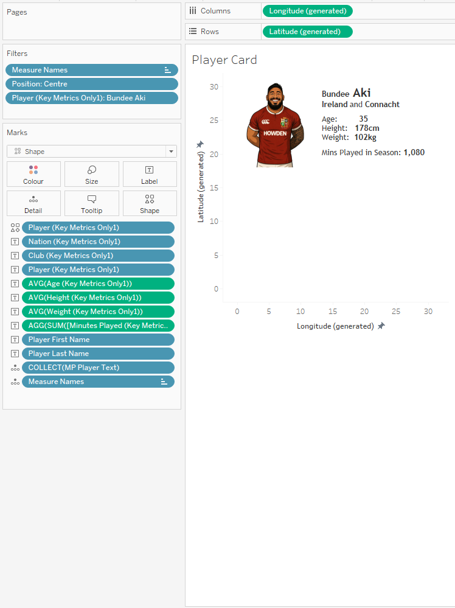
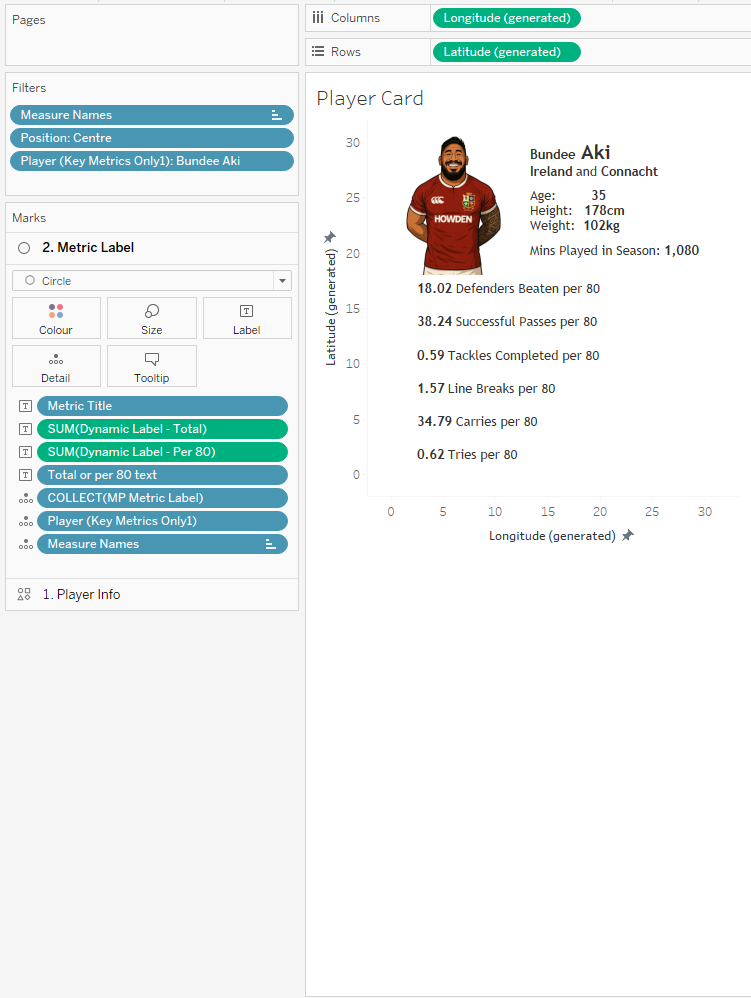
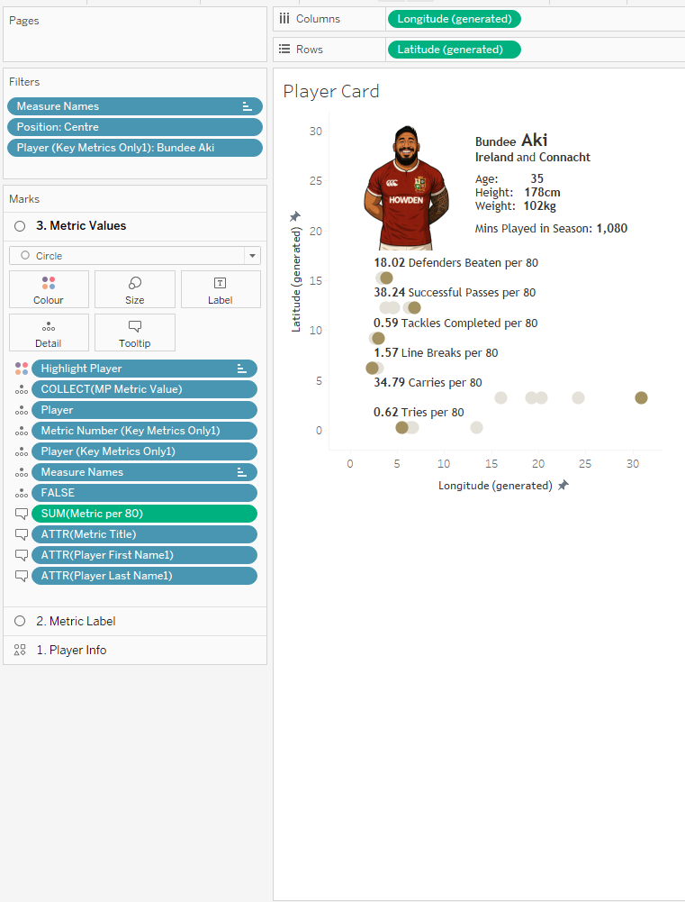
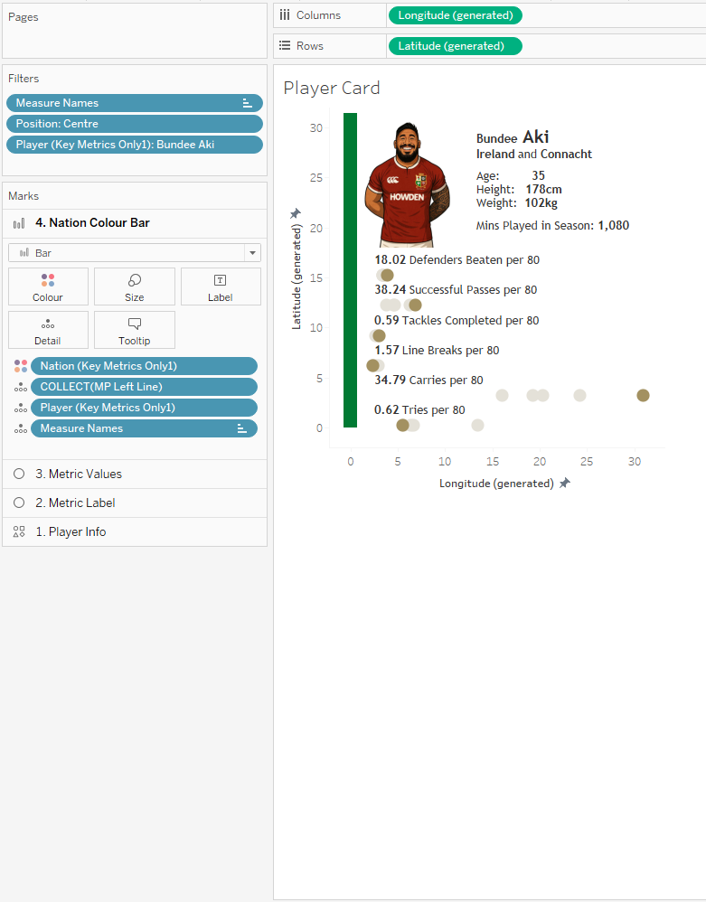
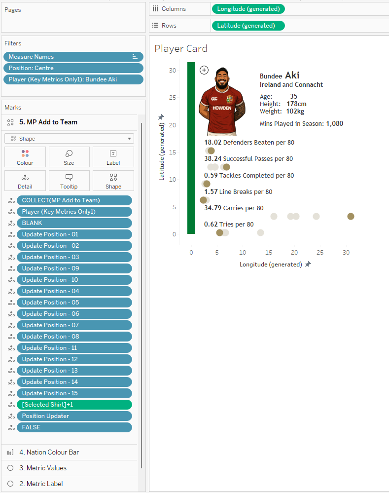
Dynamic Zone Visibility
My favourite getting started article: “Using Booleans (Dynamic Zone Visibility for Beginners)” by CJ Mayes
Another feature that my blog has looked at extensively in the past, and I know I am not the only person to have tried to write “how to” articles on this, so this will also be brief!
Dynamic Zone Visibility allows you to control the appearance of sheets on your final dashboard using Boolean parameters or fields. It is in many ways the next logical step from show/hide or navigation buttons that we learnt to love from many versions of Tableau ago. Previously this viz would have needed to be built across at least 2 dashboards, and would have been nowhere near as user friendly.
I have implemented dynamic zones on one container in this viz that means that when you select a player shirt on the home page, it opens up a new container over the top that has all the player information in. This can then be closed again to revert to the home page. The container has a visibility control parameter set such that if the value of the parameter is “true” the view will be shown; if it is “false” the view will be closed.
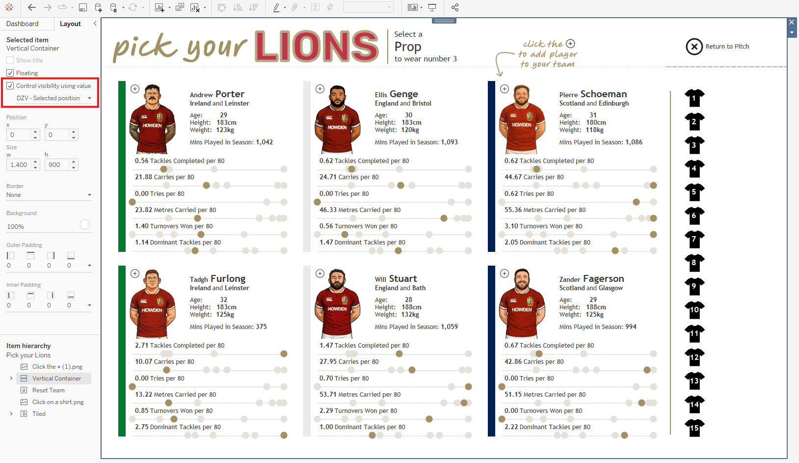
There are multiple parameter actions that control the value of this. When selecting a shirt on the home page the parameter is toggled to TRUE. Conversely, when the “Return to Pitch” button is selected, it toggles the parameter back to FALSE.
Dashboard Actions
My favourite getting started guide: OK, for this I’m struggling a little, but this guide from Tableau is great, and so is this from Ken and Kevin Flerlage
As you may have noticed by my straying into it already, dashboard actions are a huge part of this dashboard, and where the real power of this visualisation lies. There are 54 dashboard actions – 50 parameter actions, and 4 filter actions.
There is one parameter for each shirt on the pitch (15 parameters). There is also an additional parameter to keep track of which shirt number we are filling next, and another to show which position group this relates to. All parameters are string parameters and allow any value. Each of these parameters are controlled by a series of actions for different purposes. The way these actions work means that only the values we want to be present in the parameters can be, negating the need for a hardcoded list. On to the actions themselves…
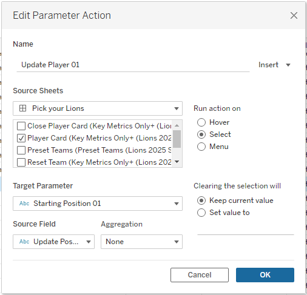
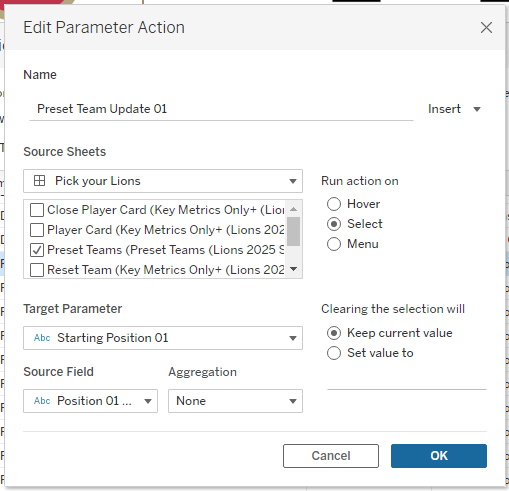
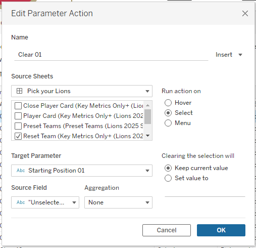
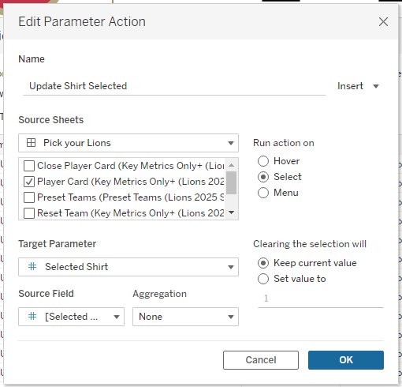
Follow on Selections – 1 parameter actions
Another subtle feature I included to improve the user experience was to automatically move to the next position after making a selection. This reduces the number of clicks needed, and is done by adding 1 to the value of the selected shirt parameter, and updating the position parameter as required.
Dynamic Zone Visibility - 1 parameter actions
The final parameter action is the one we mentioned earlier that uses dynamic zone visibility to show or hide the player cards as required.
Remove highlight on clicks - 4 filter actions
The remaining 4 actions are filter actions that remove the highlight that Tableau applies when you select a mark. This is a slight hack that I often use in building dashboards because it provides a smoother user experience and makes the finished article feel more polished. You can read about the process and other ways for achieving the same thing in this blog by Brian Moore.
//
This viz is a bit of fun, using data that I enjoy in order to demonstrate the power of Tableau. Its applications are very far reaching, and the individual techniques used make it useful in a variety of settings. In my dashboard builds at work I frequently use the three features that we have focussed on here. They allow complex things to be done in simpler ways. Fewer sheets are easier to document and maintain than having workbooks where each change needs to be traced through a myriad of sheets. This makes it far easier to handover work to colleagues whenever you need to. This made my break to spend time with my newborn son all the more straightforward, and when I return to work I am hopeful these techniques will make that a simple process too!
In summary, map layers, dynamic zone visibility, and dashboard actions are the best; and spending time with your family whenever you can is the best too. I am learning fast that days with a newborn are precious and will lead to memories that will last a lifetime.
Take care // Chris